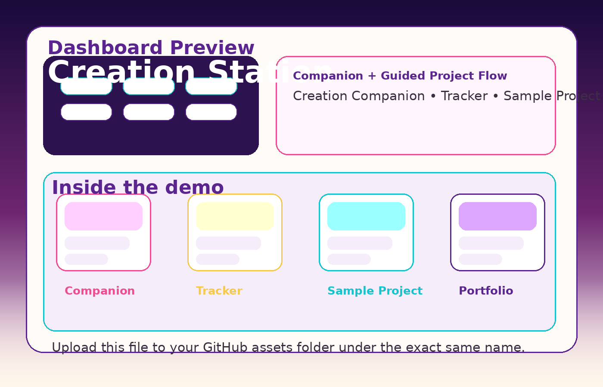
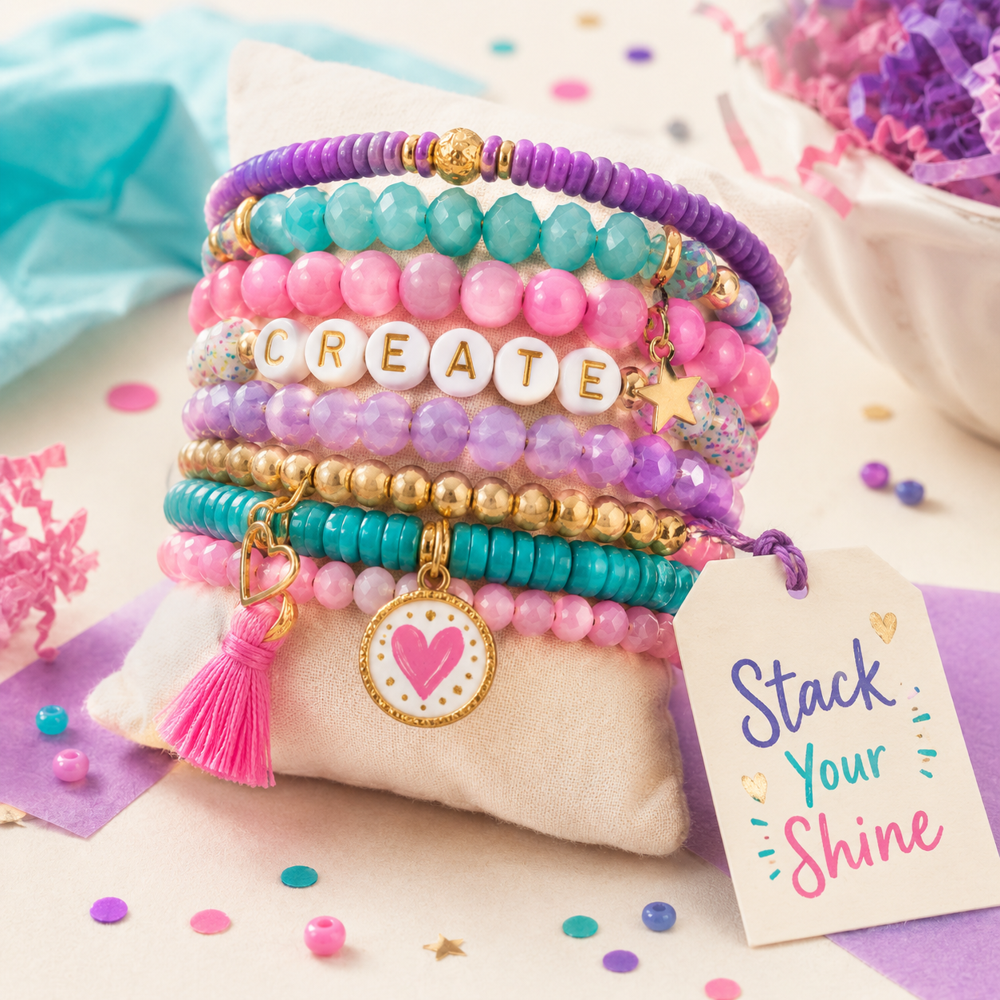
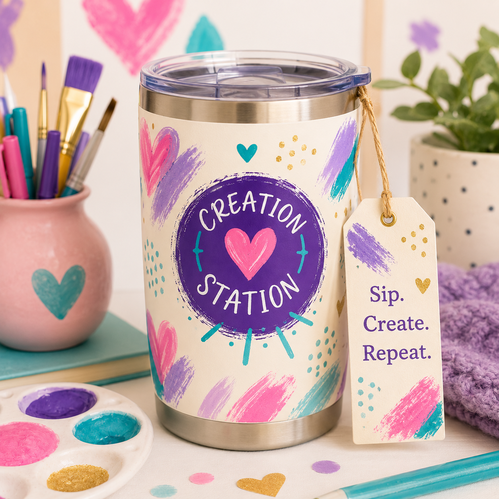

Parents & Young Creators
Guided creative projects, reflection, documentation, portfolio pieces, and practical support that helps families keep moving without losing the learning underneath it.
For busy parents raising kids in the real world
There is work, dinner, laundry, practices, errands, school, appointments, and a household that still has to keep moving.
Creation Station gives kids meaningful direction without making parents build the whole lesson from scratch or follow up with every single step. The fun feels natural. The learning underneath it is intentional.
Every project is built to strengthen problem-solving, follow-through, reflection, critical thinking, real-life application, and work a child can actually be proud to finish.

Creation Station is built for families who want creative direction with structure, for kids who love making and building, for adult crafters ready to grow, and for live class experiences that feel fun without being fluff.
Guided creative projects, reflection, documentation, portfolio pieces, and practical support that helps families keep moving without losing the learning underneath it.
For adults starting from scratch or already selling. We help organize what you make, present it better, and move it toward real income and stronger visibility.
Simple, fun, creative live sessions with a real project, a clear next step, and a smooth path for parents to register, pay, and schedule.
Creation Station is more than a craft. It blends creative projects with guided learning, reflection, documentation, presentation, and practical real-world thinking. That makes it easier for parents to see the educational value underneath the fun — including families using PEP-style funds and homeschool resources.
If the words promise an experience, the action should deliver one. Parents can jump into the dashboard demo and see what their child would actually experience inside Creation Station.

A project is not just something they made one afternoon and forgot about. It can become a real piece of work they document, present, reflect on, and build from. That gives parents something stronger than vague promises — it gives them visible evidence.
Creation Station Example
A creator page can organize real product photos, simple descriptions, contact options, and a clear cart-style layout in one place. A finished page would use the creator’s own photos, product names, story, and ordering details.


Hand-poured lavender candle with a calming floral scent.
$16Colorful beaded bracelets with uplifting words and charms.
$12
Glossy lip color and handmade soap for a bright self-care set.
$14
A bright, reusable tumbler made to carry creativity everywhere.
$18If a parent is ready, we move them forward. If they need to see it first, we let them experience the dashboard. If they still want deeper explanation, the Parent Preview is there to do the selling without killing momentum.